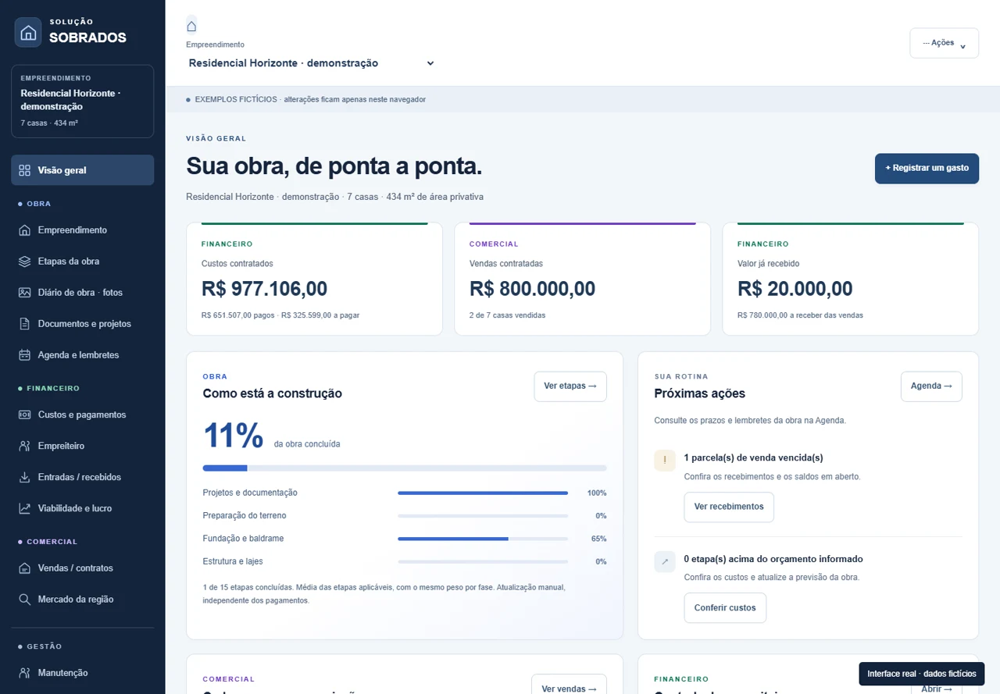

O empreendimento
em perspectiva.
Acompanhe os custos, o andamento da obra e a situação comercial das casas. Uma visão inicial para saber onde concentrar sua atenção.
- Resumo financeiro do empreendimento
- Percentual de conclusão da obra
- Visão das casas e próximos compromissos
